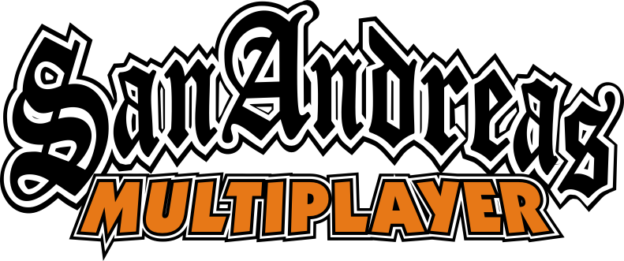

Este servidor es basado en el aporte y creación de modificaciones del juego Grand Theft Auto: San Andreas y sus plataformas multijugador SA:MP y MTA.
Toda modificación es libre de Malwares (Archivos maliciosos) para todos, además de no lucranos de esto mismo. Si desea confiar en nosotros, puede escanear cualquier archivo del servidor para demostrar nuestra seguridad ante esto.
En este servidor de Discord queremos lograr una satisfacción al usuario y brindarle soporte en cualquier situación.
Estamos en contra del uso de Cheats (Mods de ventaja) para que se arruine la experiencia de otros jugadores en la comunidad.
Todo esto y más en el enlace de aquí abajo.